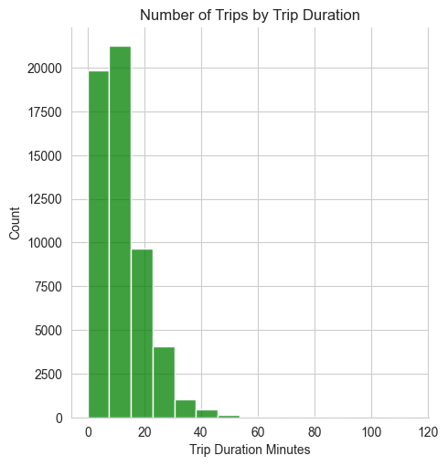
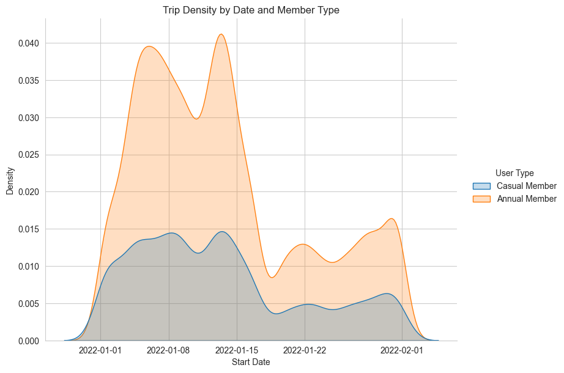
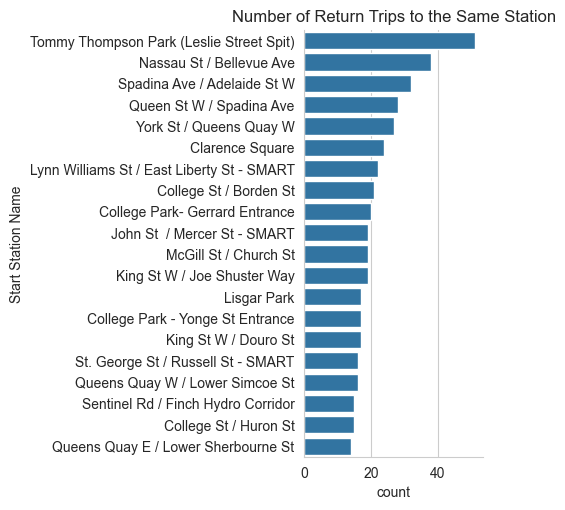
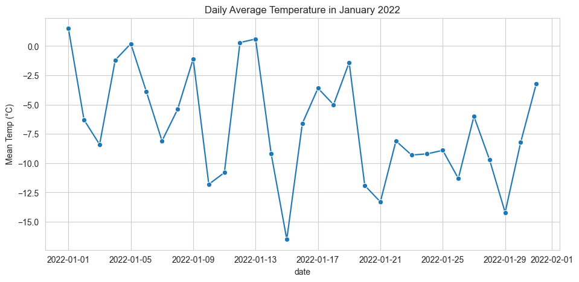
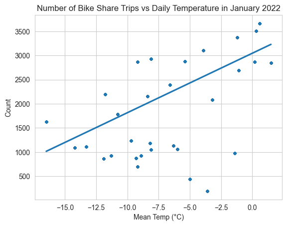

Data exploration is an important step in the data analysis process. It can highlight anomalies or interesting trends, and reveal how the data are distributed.
This notebook explains how to visually explore data by creating plots using the popular seaborn and matplotlib libraries.
It will include the following plots:
Histogram & stacked histogram
Kernel density plot
Bar charts
Line charts
Scatter plot with trend line
Install and import libraries
If you haven’t already done so, install the following libraries using pip:
Now import them using their common aliases. Note that pyplot is a module of the matplotlib library:
import pandas as pdimport seaborn as sns import matplotlib.pyplot as plt
Load bike share data
The dataset we’ll be working with is Bike Share Toronto ridership data from January 2022. It’s already been downloaded for you, so you can just load it below using the read_csv function from the pandas library.
However, if you want to download the data yourself…
Go to this page from the City of Toronto’s Open Data portal
Click on the blue “Download” bar towards the bottom
Download the bikeshare-ridership-2022 zip file
Unzip the file and open the folder
Save the Bike share ridership 2022-01.csv file
Make sure you read the file using the correct filepath
Let’s take a look at the first 5 rows of the dataframe:
df.head()
Trip Id
Trip Duration
Start Station Id
Start Time
Start Station Name
End Station Id
End Time
End Station Name
Bike Id
User Type
0
14805109
4335
7334
01/01/2022 00:02
Simcoe St / Wellington St North
7269.0
01/01/2022 01:15
Toronto Eaton Centre (Yonge St)
5139
Casual Member
1
14805110
126
7443
01/01/2022 00:02
Dundas St E / George St
7270.0
01/01/2022 00:05
Church St / Dundas St E - SMART
3992
Annual Member
2
14805112
942
7399
01/01/2022 00:04
Lower Jarvis / Queens Quay E
7686.0
01/01/2022 00:19
NaN
361
Annual Member
3
14805113
4256
7334
01/01/2022 00:04
Simcoe St / Wellington St North
7269.0
01/01/2022 01:15
Toronto Eaton Centre (Yonge St)
4350
Casual Member
4
14805114
4353
7334
01/01/2022 00:05
Simcoe St / Wellington St North
7038.0
01/01/2022 01:17
Dundas St W / Yonge St
5074
Casual Member
What do you notice about the data? Which variables are you interested in exploring?
How long do bike share trips last?
Let’s start by looking at the trip duration column to see how long people are travelling when using the bike share.
The “Trip Duration” column is in seconds, which is hard to interpret – to make it easier, let’s create a column for minutes by dividing by 60. We can then compute some simple summary statistics on the column using the describe method from pandas.
count 56765.000000
mean 14.930107
std 206.125166
min 0.000000
25% 6.183333
50% 10.016667
75% 16.050000
max 38095.650000
Name: Trip Duration Minutes, dtype: float64
Now we have the mean, standard deviation, and quantiles. The average trip length is about 15 minutes, which seems reasonable. However, the maximum trip length is about 635 hours! That doesn’t seem right – when analyzing this data, we would need to make a decision about how to handle this value. For example, we might filter it out if we’re confident it’s an error. Or maybe it’s part of a larger pattern of people who forget to dock their bikes.
The fact that the median (the “50%” statistic from above) is lower than the mean shows that the data are right-skewed – most values are clustered at the lower end of the range – and there are some large outliers.
Let’s plot a histogram to show the distribution of shorter trips (those less than 2 hours long) using the displot function from the seaborn package. Refer to this documentation to understand each of the parameters/arguments used to create the plots below.
We’ll start by filtering the data to only rows where the “Trip Duration Minutes” column value is less than or equal to 120, using loc. Note that we’re only selecting the column itself because that’s the only data we need for this plot.
sns.set_style("whitegrid") # set style to make plots look nicer# Filter the datatrips_120_duration = df.loc[df["Trip Duration Minutes"] <=120, "Trip Duration Minutes"]# Create the plot, with 15 bins, and make it greensns.displot(trips_120_duration, bins =15, color ="green" ).set(title ="Number of Trips by Trip Duration")sns.despine() # get rid of plot borders for cleaner look

According to this plot, trips are typically fairly short, with the majority of trip durations well below 20 minutes. There are a small number of trips that are longer than 40 minutes but these are relatively rare.
How does trip duration vary by user type?
Next, let’s create a stacked histogram that shows trip duration for casual versus annual members. Unlike the previous plot, we’ll need more than just the “Trip Duration Minutes” column because we’re also plotting by “User Type”.
This stacked histogram shows that shorter trips (<20 minutes) are most common for both types of members. There are far fewer trips taken by casual members compared to annual members.
How does the number of trips vary by day, for each user type?
What if we want to plot the number of trips by day of the month, colored by user type? Let’s start with a kernel density plot.
First we need to convert the “Start Time” column to a datetime object using pandas.to_datetime so that we can sort by date.
sns.displot(df_sorted_120, x="Start Date", hue="User Type", # try commenting this out and see what happens kind="kde", fill=True, height=6, aspect=11/8.5 ).set(title ="Trip Density by Date and Member Type")sns.despine()

It appears that trips peak in the first half of the month, with more trips taken by annual members than casual members, and are less frequent in the later half.
Which stations have the largest number of trips that both start and end at that station?
Now let’s try creating a visualization that’s a bit more analytical. We’ll answer the question: which stations have the largest number of trips that both start and end at that station?
# Filter the data to trips where start station ID = end station IDdfs = df.loc[df["Start Station Id"] == df["End Station Id"]]# Group by station and count the number of tripsdfs = dfs.groupby("Start Station Name").size().reset_index(name ="count")# Create a bar plot of the top 20 stations, shown in descending order of tripssns.catplot(data= dfs.sort_values("count", ascending =False).head(20), x='count', y='Start Station Name', kind="bar" ).set(title ="Number of Return Trips to the Same Station")sns.despine()

Tommy Thompson Park is the station with the most round trip bike rides, followed by Nassau St / Bellevue Ave and Spadina Ave / Adelaide St W.
Why do you think these stations have the most “round trip” rides? What additional analysis could you do to explore the potential reasons why?
Are bike share trips more common when the weather is warmer?
What if we are curious about the relationship between bike share trips and temperature? Maybe we have a hypothesis that more people tend to use bike share when it’s warmer. Let’s test this hypothesis by loading in another dataset, which includes the daily temperature in January 2022, and joining it with our bike share data.
Let’s load in our weather data, which was already downloaded for you from the federal government’s historical climate data website.
df_weather = pd.read_csv("data/toronto-historical-weather-2022.csv")# don't hide any of the column names, even though there are a lotpd.set_option('display.max_columns', None)df_weather.head() # show the first 5 rows
Longitude (x)
Latitude (y)
Station Name
Climate ID
Date/Time
Year
Month
Day
Data Quality
Max Temp (°C)
Max Temp Flag
Min Temp (°C)
Min Temp Flag
Mean Temp (°C)
Mean Temp Flag
Heat Deg Days (°C)
Heat Deg Days Flag
Cool Deg Days (°C)
Cool Deg Days Flag
Total Rain (mm)
Total Rain Flag
Total Snow (cm)
Total Snow Flag
Total Precip (mm)
Total Precip Flag
Snow on Grnd (cm)
Snow on Grnd Flag
Dir of Max Gust (10s deg)
Dir of Max Gust Flag
Spd of Max Gust (km/h)
Spd of Max Gust Flag
0
-79.4
43.67
TORONTO CITY
6158355
2022-01-01
2022
1
1
NaN
5.1
NaN
-2.1
NaN
1.5
NaN
16.5
NaN
0.0
NaN
NaN
NaN
NaN
NaN
2.4
NaN
NaN
NaN
NaN
M
NaN
M
1
-79.4
43.67
TORONTO CITY
6158355
2022-01-02
2022
1
2
NaN
-2.1
NaN
-10.5
NaN
-6.3
NaN
24.3
NaN
0.0
NaN
NaN
NaN
NaN
NaN
2.0
NaN
3.0
NaN
NaN
M
NaN
M
2
-79.4
43.67
TORONTO CITY
6158355
2022-01-03
2022
1
3
NaN
-4.0
NaN
-12.9
NaN
-8.4
NaN
26.4
NaN
0.0
NaN
NaN
NaN
NaN
NaN
0.0
NaN
3.0
NaN
NaN
M
NaN
M
3
-79.4
43.67
TORONTO CITY
6158355
2022-01-04
2022
1
4
NaN
3.3
NaN
-5.7
NaN
-1.2
NaN
19.2
NaN
0.0
NaN
NaN
NaN
NaN
NaN
0.0
NaN
3.0
NaN
NaN
M
NaN
M
4
-79.4
43.67
TORONTO CITY
6158355
2022-01-05
2022
1
5
NaN
4.9
NaN
-4.5
NaN
0.2
NaN
17.8
NaN
0.0
NaN
NaN
NaN
NaN
NaN
0.3
NaN
3.0
NaN
NaN
M
NaN
M
Given that there are so many column names in the dataframe, it might also be easier to look only at the column names, instead of the first 5 rows of data:
df_weather.columns
Index(['Longitude (x)', 'Latitude (y)', 'Station Name', 'Climate ID',
'Date/Time', 'Year', 'Month', 'Day', 'Data Quality', 'Max Temp (°C)',
'Max Temp Flag', 'Min Temp (°C)', 'Min Temp Flag', 'Mean Temp (°C)',
'Mean Temp Flag', 'Heat Deg Days (°C)', 'Heat Deg Days Flag',
'Cool Deg Days (°C)', 'Cool Deg Days Flag', 'Total Rain (mm)',
'Total Rain Flag', 'Total Snow (cm)', 'Total Snow Flag',
'Total Precip (mm)', 'Total Precip Flag', 'Snow on Grnd (cm)',
'Snow on Grnd Flag', 'Dir of Max Gust (10s deg)',
'Dir of Max Gust Flag', 'Spd of Max Gust (km/h)',
'Spd of Max Gust Flag'],
dtype='object')
We only need to keep the Date/Time and Mean Temp (°C) variables, so let’s subset the dataframe to only those columns:
Now let’s join the weather dataframe with our original bike share dataframe on their respective date/time columns. First, let’s remind ourselves which column in the df bike share dataframe has the date of the trip.
df.head(2) # only show the first 2 rows
Trip Id
Trip Duration
Start Station Id
Start Time
Start Station Name
End Station Id
End Time
End Station Name
Bike Id
User Type
Trip Duration Minutes
Start Date
Date Only
date
0
14805109
4335
7334
01/01/2022 00:02
Simcoe St / Wellington St North
7269.0
01/01/2022 01:15
Toronto Eaton Centre (Yonge St)
5139
Casual Member
72.25
2022-01-01 00:02:00
2022-01-01
2022-01-01
1
14805110
126
7443
01/01/2022 00:02
Dundas St E / George St
7270.0
01/01/2022 00:05
Church St / Dundas St E - SMART
3992
Annual Member
2.10
2022-01-01 00:02:00
2022-01-01
2022-01-01
The Start Date column is the one we want to use – Start Time also contains the date but we don’t need to know what time the trip started, just the date. We have to make sure that this variable has the same data type in each of the dataframes – if not, the join (merge) won’t work.
df['Start Date'].dtype
dtype('<M8[ns]')
df_weather_simp['Date/Time'].dtype
dtype('O')
The variables have different types, so we need to convert them so they’re the same type:
# Create new 'Date Only' column by extracting only the date from the datetime variable in the bike share datadf['date'] = df['Start Date'].dt.date# Convert the 'Date/Time' variable from string to date df_weather_simp.loc[:, 'Date/Time'] = pd.to_datetime(df_weather_simp['Date/Time']).dt.date
df['date'].dtype
dtype('O')
df_weather_simp['Date/Time'].dtype
dtype('O')
Now we can merge the dataframes, using the date column in the bike share dataset and the Date/Time column in the weather dataset.
Let’s first explore the average temperature for each day in January 2022.
fig, ax = plt.subplots(figsize=(11, 5))sns.lineplot(data=df_ridership_weather, x='date', y='Mean Temp (°C)', marker ="o" ).set(title ="Daily Average Temperature in January 2022")

Next, we’ll calculate the number of trips (i.e., rows) for each date, and then plot the number of trips versus the average temperature for every day in January 2022. We’ll include a trend line to illustrate the relationship between the two variables.
# Count the number of rows (trips) by datedf_ridership_weather['Count'] = df_ridership_weather.groupby('date')['date'].transform('count')sns.regplot(data=df_ridership_weather, x="Mean Temp (°C)", y="Count", scatter_kws={"s": 8} ).set(title ="Number of Bike Share Trips vs Daily Temperature in January 2022")

The trend line has a positive slope, indicating there is a positive relationship between average daily temperature and number of trips.
We can also determine how highly correlated the two variables are by calculating the Pearson correlation coefficient using the pearsonr function from the stats module of the scipy library.
from scipy.stats import pearsonrpearsonr(df_ridership_weather["Mean Temp (°C)"], df_ridership_weather["Count"])
The Pearson correlation coefficient (0.65) is positive and relatively close to 1, which means there is a moderately strong positive linear relationship between the number of daily trips and the temperature. A value of 0 would indicate no correlation, while a value close to -1 would indicate a strong negative relationship.
The p-value is very small (<0.05), meaning the correlation is statistically significant (i.e., there is strong evidence that the correlation is real).
We can conclude that our hypothesis was correct: more people tend to use bike share when it’s warmer. However, given that we only looked at the correlation between these two variables, we are not able to establish causation. In other words, we can say that there is a relationship, but we cannot say why. We are just in the exploratory phase of the data analysis process, and to say anything more about the reason for the relationship we would need to do more in-depth modeling.